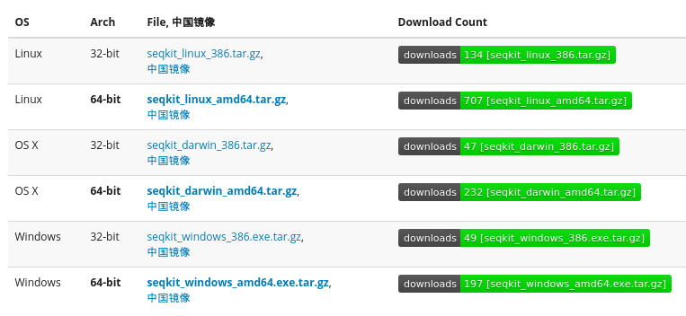

SeqKit发布2周年了，终于还是决定自己写一篇中文文章来详细介绍一下。
先前写了一篇csvtk的介绍文章，但可能是因为行文偏x冷淡风，撩不起大家的兴趣。 所以我争取好好表现，让大家真正兴奋起来。
背景
搞生物信息的亲们一定碰到过处理序列数据，其中FASTA和FASTQ是最简单但又最常见的 序列格式了。通常大家都会用shell命令或者写一些小脚本来处理，
当年我刚入行的时候，也是从玩弄FASTA序列开始，比如最简单的看看序列数量， 或者修改一下序列名称，复杂点的分割一下大文件。说起来也是很丰富（艰辛）的历程：
-
最开始每遇到一种操作就写个Perl脚本，但写脚本费时费力啊，编程水平也不行， 经常持续写一两个小时的bug。
-
好不容易写好，发现工头，哦是老板频繁改需求， 被虐几次后，我终于把经常要改的参数都写成命令行参数，轻松应对各种场景。
-
有时候我想给网友分享我的脚本，但需要他安装Perl，甚至需要安装一些库。什么？没安Perl？不会安脚本？
-
后来我终于知道不用什么都自己写脚本，得学会用现成的工具。但，但，一有的是C写点，好吧，自己编译，oh No! 编译失败～～。要么就是要安装库，比如Bioperl，谁试谁知道，编译过程让人生畏，让人崩溃。。

-
已有的工具也良莠不齐，要么功能太少，不能满足需求，要么性能捉急。。
后来我逐渐攒了很多脚本，都放在 https://github.com/shenwei356/bio_scripts 上面分享， 多为Perl写的，但正如前面写点，人家难得安装啊。。。
直到我听说了go语言，我就决定重写所有工具。为什么是go语言呢，当然这是后话了。
SeqKit
如果你也有类似的痛苦经历，或者不想经历这些梦魇，那你一定要试一试SeqKit -- 处理FASTA/Q序列文件的跨平台且超快的工具！
用户数说明了一切，目前最新版下载量已经1300+了，还不含Bioconda的下载数据。 那么多人用，你还在犹豫什么呢？ 
卖点
它究竟靠什么吸引为何那么多用户下载，受到用户的一致好评呢？ 因为它真的很好用：
- 跨平台, 支持Linux, Mac OS X，Windows，甚至BSD几乎所有的现代操作系统。
- 无依赖，免编译，免安装，免配置，下载即用，下载编译好的压缩包解压就能用了，就那么简单。
- 速度超快，高度优化的序列解析库，速度接近大牛Heng Li写的klib，无缝支持FASTA与FASTQ。
- 23个子命令提供丰富的功能，且能通过命令行管道任意组合。
- 易用，支持bash补全。
子命令
下列的子命令均来自于作者多年的分析经历，以及用户的反馈不断增加改进。 多数命令都支持STDIN，从而能通过命令行管道任意组合，实现复杂的功能。
一、序列与子序列
seq验证序列，显示序列名称/序列，反向互补，去除gap，大小写转换，按长度筛选subseq通过自定义区域（异常强大）/gtf/bed提取目标子序列，甚至包括侧翼序列。sliding序列滑窗(sliding)stats序列统计，数量，碱基数，gap数，最小/最长序列，N50faidx创建FASTA index file，并提取序列，比samtools faidx快，且功能多一点
二、格式转换
fx2tab转FASTA/Q为表格格式，可附带序列长度，GC含量等信息，非常有用tab2fx转表格格式回FASTA/Qfq2fa转FASTQ为FASTAconvertFASTQ质量编码相互转换（Sanger, Solexa and Illumina）
三、搜索
grep通过命令/序列/序列motif来搜索序列locate定位子序列/motifs
四、集合操作
head输出前面N条序列range输出任意范围的序列：前面，中间，最后sample按比例或数量进行采样rmdup按序列ID/名称/序列进行去重duplicate重复序列common按序列ID/名称/序列寻找多个文件间的共有序列split按ID/大小/份数，甚至子序列来分割
五、编辑
replace用正则表达式来编辑序列/名称，支持按key-value文件来替换rename对重复的序列ID重命名restart对环状基因组重新设定序列起始位点。concat连接多个文件中具有相同ID的序列
六、排序
shuffle打乱顺序sort按序列ID/名称/序列/序列长度进行排序
功能实在太多，就不一一举例了，项目网站提供了丰富的文档供查阅，包括用法和详细的例子，甚至开发文档。
最后
稍微有点遗憾的是，那么多人用，但是目前仍然只有２个引用，或许大家的文章还在审稿吧？ 或许工具太基础了，就像R语言一样，谁会去引用一个大家都在用的人人知道的编程语言呢？
如果你觉得SeqKit和作者的其它工具有用，请分享给你的同学、同事。如果有Github帐号，也可star该项目以表支持。
如果有任何疑问或者建议、需求，请在Github项目主页的issue页面新建issue。